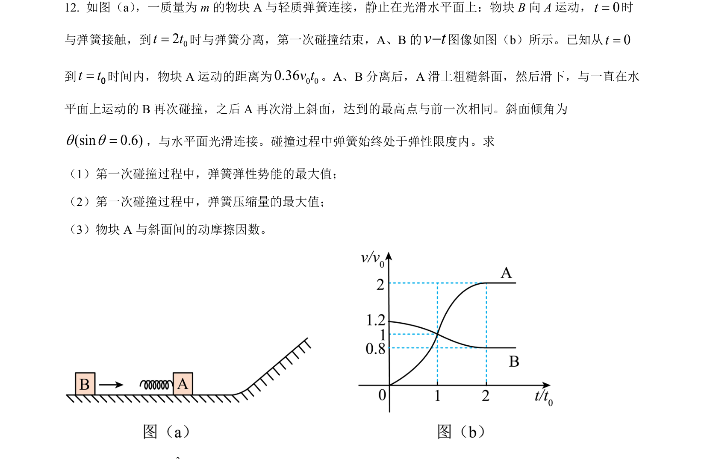
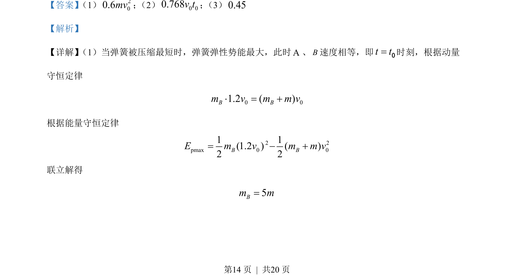
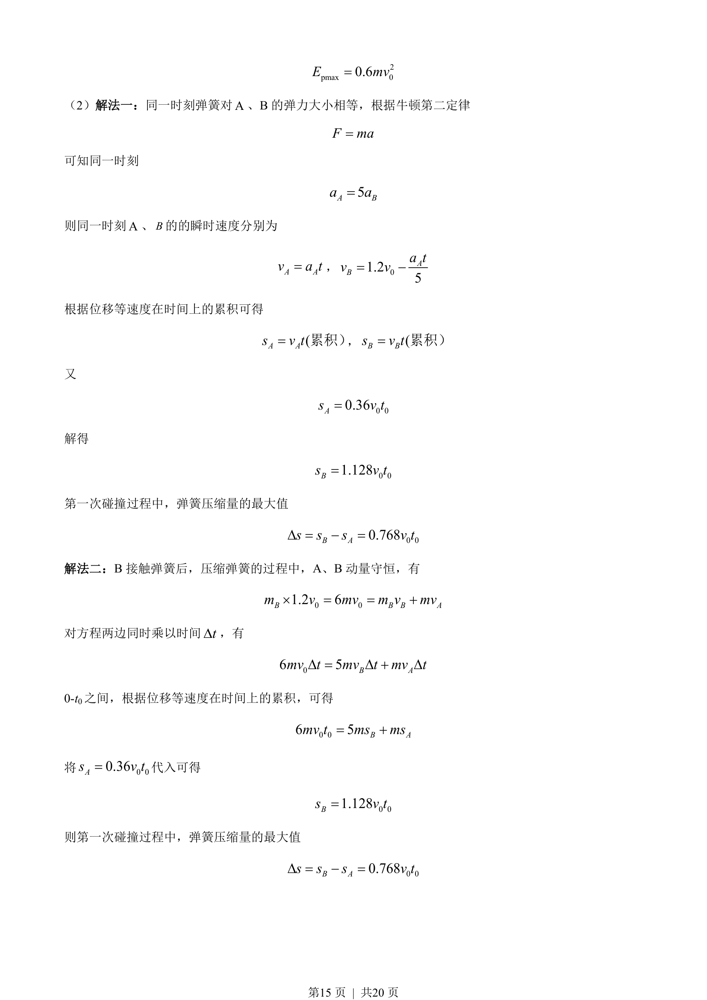
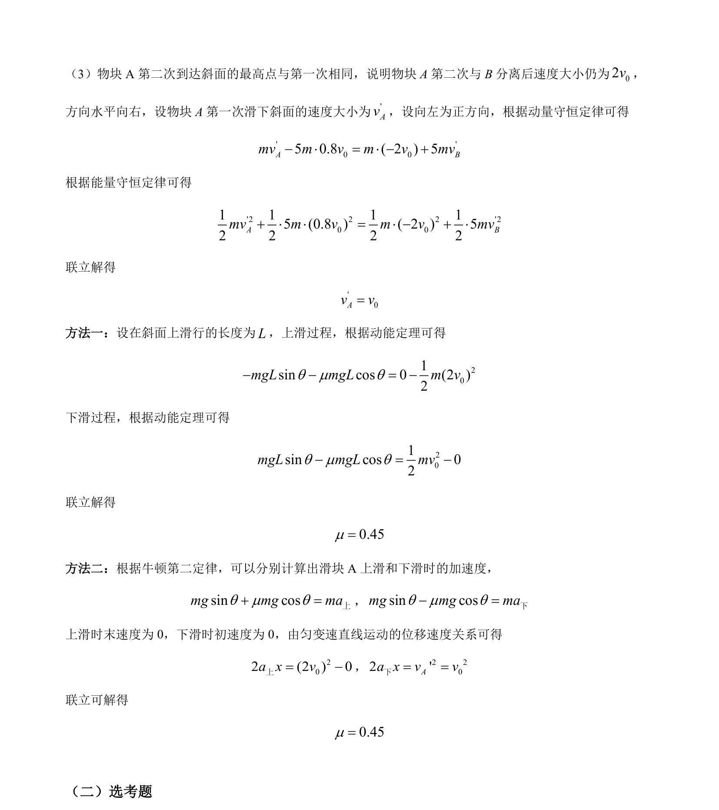

考点：动量守恒定律 能量守恒定律 弹性势能 牛顿第二定律

本题为动量守恒与能量守恒综合应用，涉及弹簧压缩、碰撞、斜面运动等多过程分析。



📄 原 PDF 第 14 页：
素材/真题/吉林/2008-2024·（吉林）物理高考真题/2022年高考物理试卷（全国乙卷）（解析卷）.pdf
【答案】 （1） 200.6mv； （2） 0 00.768v t； （3）0.45 【解析】 【详解】 （1）当弹簧被压缩最短时，弹簧弹性势能最大，此时A、B速度相等，即t t=0时刻，根据动量 守恒定律 0 01.2 ( )B Bm v m m v = + 根据能量守恒定律 2 2pmax 0 01 1(1.2 ) ( )2 2B BE m v m m v= - + 联立解得 5Bm m=